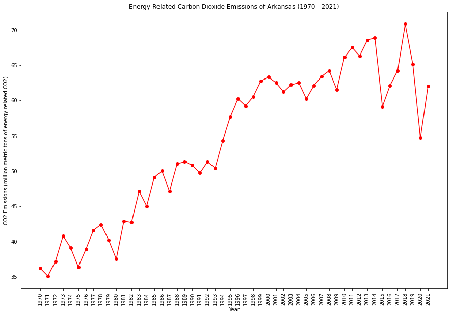
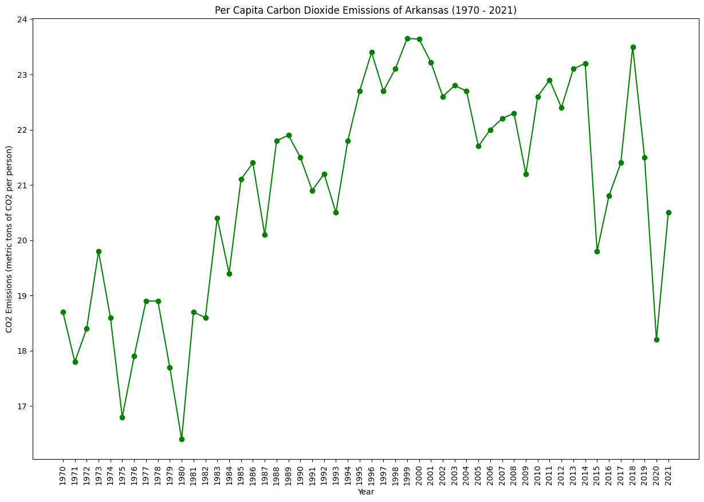
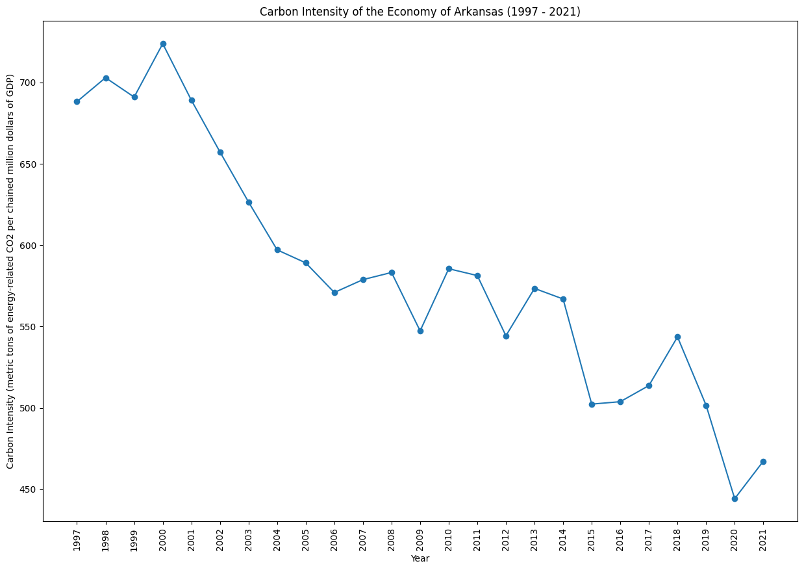
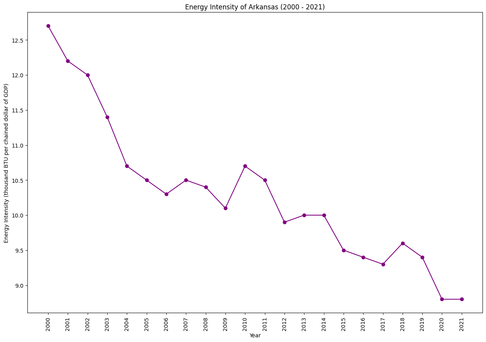

|  |  |
|  |  |
Arkansas has a diverse energy profile, including a mix of fossil fuels and renewable energy. The state is working on increasing energy efficiency and exploring cleaner energy options. Balancing economic development with environmental sustainability is a consideration, particularly in the context of the state's industrial activities.